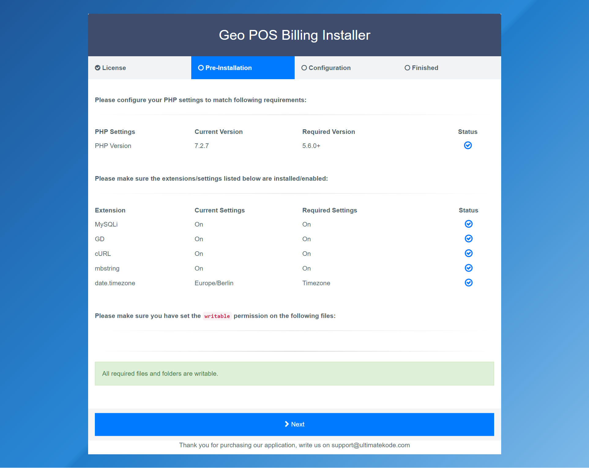
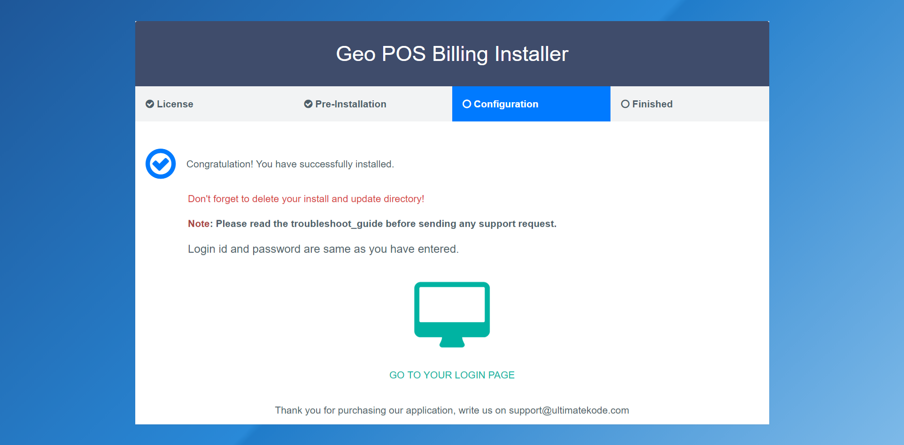
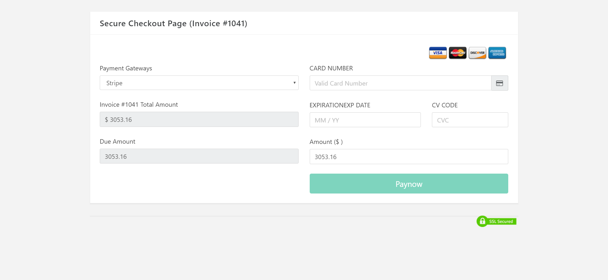

Geo Point Of Sale and CRM Software
Documentation version 5.0
Introduction
- Item Name : Geo POS - Accounting, CRM and CRM Software
- Item Version : v 5.0 +
- Author : UltimateKode
- Support : support@ultimatekode.com
First of all, Thank you so much for purchasing this application and for being
my
loyal customer.
You are awesome!
You are entitled to get free lifetime updates to this product +
exceptional support from the author directly.
This documentation is to help you regarding each step of usages. Please go through the documentation carefully to understand how this application is work. PHP, HTML, CSS and MySQL knowledge is required to customize this application. You may learn basics here, here.
Requirements
You will need the following requirements to install this application.
- Hosting Account
- FTP Tool to upload files to Server (eg: FileZilla)
- Web Browser to run the application (eg: Google Chrome or Mozilla Firefox)
- Server should be have at least PHP 5.6 or greater and MySQL 5.x version
Be careful while editing the
application. If not edited properly, the logical and design layout may
break completely.
No support is provided for faulty customization.
Getting Started #back to top
Local XAMPP Installation
- Install XAMPP - Do not Install in C Drive
- Open your xampp/htdocs folder
- Empty htdocs folder
- Extract files_to_upload from geo setup to htdocs
- Open XAMPP From Start Menu -> Start Apache and MySQL
- visit localhost/phpmyadmin -> create a database
- visit localhost/ -> it will start the installation (database user name is root and password is blank
cPanel Installation
Generic Server Installation
- Create a MySQL Database in your hosting control panel.
- Note down your Database credentials - database host, username, password and database name.
- Select files_to_upload folder content(internal files ad folders)
and zip it.

- Upload it (your_zip) file to server in desired folder
- Now visit to your application in browser with correct address like http://www.example.com/application
- Follow on screen steps
START
NEXT

NEXT

Finished
After successful login you will redirected to the dashboard.
Please have an overview of dashboard

Settings#back to top
In this section you can manage following options .
- Company Settings
Company information and logo for invoices and other type of receipts.

- Billing & Language Settings
TAX, TAX ID, Langauage and other invoicing related settings

- Currency
Company Currency Format settings like Decimal Separator,Thousand Separator etc

- Date & Time Format
Date & Time Format settings

- Transaction Categories
Transaction Categories are helpful to sort transactions in categories

- Set Goals
You can set your goals here it will display on dashboard.

- REST API
One of the most popular types of API is REST or, as they're sometimes known, RESTful APIs. REST or RESTful APIs were designed to take advantage of existing protocols. Application is shipped with ready to use RestFul Service. You can write code in rest section and link it with other applications. More Here

- Email Config
Geo POS utilize SMTP protocol to send its all emails including (invoice notifications, user password reset). You must configure SMTP correctly to send emails. Please do not send support requests regarding SMTP configuration. It has perfectly tested SMTP integration so check your server credentials.

Employee Management #back to top
In this section you can manage your company employee and their roles. To login employee email and password are required.
Employee Role Definition
- BusinessOwner : With this role user can access all setting and section of application.
- Business Manager : With this role user can access section of application but not allowed to mange employee,application settings, payment gateways settings.
- Sales Manager: It can access sales section with stock manager. App Dashboard access is also disabled for this role.
- Sales Person: Only allowed to access the sales section. App Dashboard access is also disabled for this role.
- Inventory Manager: Only allowed to access the stock management section. Full App Dashboard access is disabled for this role.
- Project Manager: Only allowed to access the project management section. Full App Dashboard access is disabled for this role.

Payment Gateway #back to top
Application has ready to some popular payment gateways.
- Stripe
- Authorize.Net
- Pin Payments
- PayPal
- SecurePay
You can enable or disable these either all or individually.
Enabled gateways will display publicly on invoice payment page where customer can make a
payment. Look at screenshots of public invoice payment page. Please do not send support
requests reagrding Payment Gateway Credentials and configuration. These gateway integration
is perfectly tested so check your Gateway credentials or contact to service provider.
Final Payment Page it will display like this

Sales : POS, Invoices , Quotes & Subscriptions#back to
top
In sales section you can create invoices, quotes and recurring invoices.
POS Create - Menu (Sales>POS>New Invoice)
It will ask you to open teh register before POS Invoice creation.

Standard Invoice Create - Menu (Sales>Sales>New Invoice)

After creation of invoice you can view the invoice. Manage invoice actions like edit, cancel,email, print.

Manage Invoices
Here you can view the invoices history and mange them.

Subscriptions
Subscriptions is same as other invoices but here invoices will automatically generated. You need to setup the cron job for automatic invoices
Stock Management #back to top
In this section you have to do entry of your all stock. There is a stock tracker added in application which will provide you stock records.

Purchase Order
This feature is helpful to maintain record of your incoming stock. Additionally you can forward it your suppliers as an email also. Functionality of this section is similar to the invoices but it acts opposite to the invoice.
CRM : Customers, Suppliers #back to top
Customers
Customer Relationship Management section have all customers address, all invoices and money transactions by the customer. Here you can reset the customer login password.
Customer can login http://yourapplication.com/crm

Groups
You can send bulk email to all customer in a group.
Suppliers
A supplier is required to create a purchase order. We had discussed on purchase orders on above section.
ACCOUNTS & BALANCE #back to top
This section is heart of your business. Here you have to add internal business accounts. Payments in invoices,purchase orders , income and expenses transactions will automatically reflected in this section.

Export Data#back to top
In Export Data Section you can customers,suppliers,transactions and products easily.
Exported date_format is .csv.
Additionally, you can backup your whole database also.

REST#back to top
Application has pre-installed REST drivers. You can you use the application as per your requiremnts.
Sample Get function
public function clients_get()
{
$id = $this->get('id');
if ($id === NULL) {
$list = $this->restservice->customers();
if ($list) {
// Set the response and exit
$this->response($list, REST_Controller::HTTP_OK); // OK (200) being the HTTP response code
} else {
// Set the response and exit
$this->response([
'status' => FALSE,
'message' => 'No users were found'
], REST_Controller::HTTP_NOT_FOUND); // NOT_FOUND (404) being the HTTP response code
}
}
How to enable rest service
To enable rest service you have to generate an api key in settings>REST API section.
Response
Default data response will be in json format
Methods
By deafult some basic functions are added. You can add more methods in application/controller/Rest.php
Sample POST method
public function clients_post()
{
$id = $this->post('id');
if ($id === NULL) {
$list = $this->restservice->customers();
// Check if the users data store contains users (in case the database result returns NULL)
if ($list) {
// Set the response and exit
$this->response($list, REST_Controller::HTTP_OK); // OK (200) being the HTTP response code
} else {
// Set the response and exit
$this->response([
'status' => FALSE,
'message' => 'No users were found'
], REST_Controller::HTTP_NOT_FOUND); // NOT_FOUND (404) being the HTTP response code
}
}
// Find and return a single record for a particular user.
$id = (int)$id;
// Validate the id.
if ($id <= 0) {
// Invalid id, set the response and exit.
$this->response(NULL, REST_Controller::HTTP_BAD_REQUEST); // BAD_REQUEST (400) being the HTTP response code
}
// Get the user from the array, using the id as key for retrieval.
// Usually a model is to be used for this.
$list = $this->restservice->customers($id);
if (!empty($list)) {
$this->set_response($list[0], REST_Controller::HTTP_OK); // OK (200) being the HTTP response code
} else {
$this->set_response([
'status' => FALSE,
'message' => 'User could not be found'
], REST_Controller::HTTP_NOT_FOUND); // NOT_FOUND (404) being the HTTP response code
}
}
CRON Jobs#back to top
The software utility Cron is a time-based job scheduler in Unix-like computer operating systems. People who set up and maintain software environments use cron to schedule jobs (commands or shell scripts) to run periodically at fixed times, dates, or intervals. It typically automates system maintenance or administration though its general-purpose nature makes it useful for things like downloading files from the Internet and downloading email at regular intervals.
To create a cron job, perform the following steps:
Select the interval at which you wish to run the cron job from the appropriate menus, or enter the values in the text boxes.
Common Settings-This menu allows you to select a commonly-used interval. The system will configure the appropriate settings in the Minute, Hour, Day, Month, and Weekday text boxes for you.
Minute - Use this menu to select the number of minutes between each time the cron job runs, or the minute of each hour on which you wish to run the cron job.
Hour- Use this menu to select the number of hours between each time the cron job runs, or the hour of each day on which you wish to run the cron job.
Day - Use this menu to select the number of days between each time the cron job runs, or the day of the month on which you wish to run the cron job.
Month- Use this menu to select the number of months between each time the cron job runs, or the month of the year in which you wish to run the cron job.
Weekday- Use this menu to select the days of the week on which you wish to run the cron job.
Corn Job Management
The software utility Cron is a time-based job scheduler. People who set up and maintain autometed application task use cron to schedule jobs to run periodically at fixed times, dates, or intervals. Recommended corn job scheduling is in midnight.
Go to settings> Autometic Corn Jobs
Example Token is 45405689
Job Subscription Invoices Auto Management URL is
WGET http://example.com/cloud_invoice/cornjob/subscription?token=45405689
GET http://example.com/cloud_invoice/cornjob/subscription?token=45405689
Due Invoices Automatic Email URL is
GET http://example.com/cloud_invoice/cornjob/due_invoices_email?token=45405689
WGET http://example.com/cloud_invoice/cornjob/due_invoices_email?token=45405689
Automatic Report data update
This action will update the monthly sales,sold items, total income and expenses of past 12 months.
GET http://example.com/cloud_invoice/cronjob/reports?token=45405689
WGET http://example.com/cloud_invoice/cronjob/reports?token=45405689
Thermal Printer Config#back to top
Case 1 : if your printer is connected to direct network OR GeoPOS and printer are on same machine
Case 2 : Printing on different computer while app host is different (Printing on client computer while app is at hosting server)
In this application we have used https://github.com/mike42/escpos-php library This project has included subset of Epson's ESC/POS protocol for thermal receipt printers. It allows you to generate and print receipts with basic formatting, cutting on a compatible printer.
Case 1: if your printer is connected to direct network OR GeoPOS and printer are on same machine
This case is applicable only if your app and printer is directly connected - like both are on same local network. - Printer is USB/Local_Network and app is hosted with localhost on same computer/local_network.
Please go printer config section
- 1. Add Printer
- 2. Enter Printer Name it can anything
- 3. Enter Select Printer Type
1. File Printer- use this option if your using standard UNIX/Linux
system
Your printer/app should have connected/hosted on the same operating system. Printer Connector
value for this option is generally like
Printer Connector : /dev/usb/lp0
2. Network Printer- use this option if your using a Network connected
Printer
Your printer should have a static ip address. Printer Connector value for
this option is generally like
Printer Connector : http://10.x.x.x:9100
Printer Connector : http://236.x.x.x:9100
Class 10.x is related to your private network, it will not work with public hosted app on different server (See Case 2)
If your printer is on public network(public ip), it will work with public hosted app on different server
3. Windows Printer (USB)- use this option if your using standard windows
system
Your printer/app should have connected/hosted same operating system. Printer Connector
value for this option is generally like
Printer Connector : LPT1
It will not work with public hosted app on different server and printer is connected to a different local computer (See Case 2)
Here 'LPT1' can be your printer's share name -> go to windows printer settings > printer properties > enable sharing (you will get the share name like ESPXYZ)
Case 2: Printing on different computer while app host is different (Printing on client computer while app is at hosting server)
This case is applicable only if your app is hosted on a public hosting server while printer is connected to your local system/computer/network.This case is applicable for most of USERS.
- 1. Download webserver - XAMP ... Download XAMPP . Install It (Do not install it to C Drive - It may generate sometime file write issues)
- 2. Download the pos printing server http://www.ultimatekode.com/pos_printer.zip
- 3.
For XAMPP Open XAMMP Installation Directory/htdocs Folder
Extract downloaded file to htdocs (yourlocalserver)/pos_printer - 4. Open htdocs/pos_printer/config.php
- 5. Check config.php line no 27 , enter your hosted pos app url
- 6. Check config.php line no 35 , enter your rest key.
You can generate key in GeoPOS>Left Side Menu
Settings> REST API - 7. Check config.php line no 50 , enter your printer connection type.
For FilePrintConnector = 'file'
NetworkPrintConnector = 'network'
WindowsPrintConnector (USB) = 'windows'
DummyPrintConnector = 'test'
Please enter one value, example for windows 'windows' - 8. Note: Edit Only If you have entered $config['printer_connection'] = 'file'; in
step 7 than please edit line no 64, otherwise skip it. Enter your value example : /dev/usb/lp0 - you can it in your terminal
$config['print_file'] = '/dev/usb/lp0';
- 9.Note: Edit Only If you have entered $config['printer_connection'] =
'network'; in step 7 than please edit line no 67 , otherwise skip it. Enter your local network printer ip
$config['print_network'] = array("10.x.x.x", 9100);if you printer ip is public you can follow CASE 1 - 10.Note:Edit Only If you have entered $config['printer_connection'] =
'windows'; in step 7 than please edit line no 70 . Enter your value for
$config['print_windows'] = 'LPT1';
Here 'LPT1' can be your printer's share name -> go to windows printer settings > printer properties > enable sharing (you will get the share name like ESPXYZ)
- 11. Later go to Geo POS app printer settings> add printer > select REST Based Printer Server as Printer Type
- 11. In the Printer Connector section - enter http://localhost/pos_printer/index.php
- 12. In the Business Locations section - Default
- 13. In the Printing Mode section - Basic
Advance Mode Requires Imagick Extension on ;local host and Hosting server as well. - 14. in POS Section > Pay+Print Now Button work only for CASE 1
$config['app_url'] = 'http://youdomain.com/yourfolder/';
Example http://billing.ultimatekode.com/yourfolder/ - do not forget last '/' slash
$config['rest_key'] = 'YOURKEY_HERE';
$config['printer_connection'] = 'test';
Compatibility
| Linux | Mac | Windows | |
|---|---|---|---|
| Ethernet | Yes | Yes | Yes |
| USB | Yes | Not tested | Yes |
| USB-serial | Yes | Yes | Yes |
| Serial | Yes | Yes | Yes |
| Parallel | Yes | Not tested | Yes |
| SMB shared | Yes | No | Yes |
| CUPS hosted | Yes | Yes | No |
Supported Printers
- 3nStrat POS-08
- AURES ODP-333
- AURES ODP-500
- Bematech-4200-TH
- Bematech LR2000E
- Bixolon SRP-350III
- Black Copper BC-85AC
- Citizen CBM1000-II
- Citizen CT-S310II
- Dapper-Geyi Q583P
- Daruma DR800
- DR-MP200 (manufacturer unknown)
- EPOS TEP 220M
- Epson EU-T332C
- Epson FX-890 (requires
feedForm()to release paper). - Epson TM-T20
- Epson TM-T20II
- Epson TM-T70
- Epson TM-T70II
- Epson TM-T81
- Epson TM-T82II
- Epson TM-T88II
- Epson TM-T88III
- Epson TM-T88IV
- Epson TM-T88V
- Epson TM-U220
- Epson TM-U295 (requires
release()to release slip). - Epson TM-U590 and TM-U590P
- Equal (EQ-IT-001) POS-58
- Excelvan HOP-E200
- Excelvan HOP-E58
- Excelvan HOP-E801
- Excelvan ZJ-8220
- Gainscha GP-5890x (Also marketed as EC Line 5890x)
- Gainscha GP-U80300I (Also marketed as gprinter GP-U80300I)
- gprinter GP-U80160I
- Hasar HTP 250
- Metapace T-1
- Metapace T-25
- Nexa PX700
- Nyear NP100
- Okipos 80 Plus III
- Orient BTP-R580
- Partner Tech RP320
- P-822D
- P85A-401 (make unknown)
- Rongta RP326US
- Rongta RP58-U
- Senor TP-100
- SEYPOS PRP-300 (Also marketed as TYSSO PRP-300)
- Sicar POS-80
- Silicon SP-201 / RP80USE
- SPRT SP-POS88V
- Star BSC10
- Star TSP100 ECO
- Star TSP100III FuturePRNT
- Star TSP-650
- Star TUP-592
- Venus V248T
- Xprinter F-900
- Xprinter XP-365B
- Xprinter XP-58 Series
- Xprinter XP-80C
- Xprinter XP-90
- XPrinter XP-Q20011
- Xprinter XP-Q800
- Zjiang NT-58H
- Zjiang ZJ-5870
- Zjiang ZJ-5890K
- Zjiang ZJ-5890T (Marketed as POS 5890T)
- Zjiang ZJ-8220
Email Settings & Templates#back to top
Email Config
Geo POS utilize SMTP protocol to send its all emails including (invoice notifications, user
password reset). You must configure SMTP correctly to send emails. Please do not send
support requests regarding SMTP configuration. It has perfectly tested SMTP integration so
check your server credentials.
Email Templates
- You can find in the template section in menu
- User Password Reset Email.
yourproject/application/controllers/User.php
- Project Manager Notifications.
yourproject/application/models/Projects_model.php
Support Desk #back to top
Please remember you have purchased a very affordable application and you have not paid for a full-time web design agency. Occasionally we will help with small tweaks, but these requests will be put on a lower priority due to their nature. Support is also 100% optional and we provide it for your connivance, so please be patient, polite and respectful.
Please visit the ultimatekode helpdesk and ask question http://helpdesk.ultimatekode.com
Enter a valid email to receive ticket replies. Gmail is recommended for reliable communication. Email maybe found in SpamBox after 5 minutes (whitelist helpdesk@ulimatekode.com). If you are not receiving emails means you will not get reply notifications.
Support for our items includes:- * Responding to questions or problems regarding the item and its features
- * Fixing bugs and reported issues
- * Providing updates to ensure compatibility with new software versions
- * Customization and installation services
- * Support for third party software and plug-ins
- * Make sure your question is a valid application Issue and not a customization request.
- * Make sure you have read through the documentation before asking support on how to accomplish a task.
- * Make sure to double check the application FAQs.
- * Try disabling any active plugins to make sure there isn't a conflict with a plugin. And if there is this way you can let us know.
- * If you have customized your application and now have an issue, back-track to make sure you didn't make a mistake. If you have made changes and can't find the issue, please provide us with your changelog.
- * Almost 80% of the time we find that the solution to people's issues can be solved with a simple "Google Search". You might want to try that before seeking support. You might be able to fix the issue yourself much quicker than we can respond to your request.
- * Make sure to state the name of the application you are having issues with when requesting support via CodeCanyon.
Files & Credits #back to top
I am not the only person who wrote these codes. I used several open source projects. My special thanks to thousands of open source community members, I can't mention their names but, all who contributed to these communities. I've used the following libraries, icons or other files as listed. These are the primary library files used for design the application. Use these to customize your application even further.
| Name |
|---|
| Codeigniter Framework |
| jQuery Library |
| Bootstrap Library |
| robust bootstrap template |
| PHP Mailer |
| Morris Chart |
| Feather |
| Ionicons |
| FPS Line Icons |
| IcoMoon |
| Font Awesome |
| Meteocons |
| Evil Icons |
Version History (Changelog) #back to top
You can find the version history (changelog.txt) file on documentation folder
Once again, thank you so much for purchasing this application. As I said at the beginning, I'd be glad to help you if you have any questions relating to this application. No guarantees, but I'll do my best to assist. If you have a more general question relating to the application on Codecanyon, you might consider visiting the forums and asking your question in the "Item Discussion" section.
Changelog
--- Changelog -----
Change Log v 3.5 b55 - Manual Update
[ This is a manual update please watch the update video or read the update guide ]
https://youtu.be/v-7fZn449tc
- Update : Codeigniter & all libraries updated to support PHP 7.3 better
- Update mechanism improved
- Code enhanced
- PayPal Payment Gateway Updated: Redirect to PayPal.com instead on on page card data
- PDF temp directory Changed to the userfiles/temp/pdf
Change Log v 3.6 b54 - Auto Web Update
- Added: Account Type Added : Assets, Expenses, Income, Liabilities, Equity
- Added: BalanceSheet Structure Improved
- Added: Date Filter Search Added at all invoices,quotes etc pages
- Added: Status Search Added at all invoices,quotes etc pages to filter the records
- Added: Stock Section Product Search Improved
- Added: New Fresh Installation has a new option - database number systems 0.00 to 0.0000
Change Log v 3.5 b51 - Auto Web Update
- Added: Data Export Added to Sales module - pos, standard invoices,quotes & subscriptions
- Added: Data Export Added to Stock module -purchase orders,stock return
- Added: Data Export Added to Project module
- Added: Data Export Added to Promo,Miscellaneous module
- Added: Data Export Added to HRM module
- Added: Stock Transfer Reports Added CategoryWise
- Added: Stock Transfer Reports Added WarehouseWise -
- Added: Enable Application Development Mode Added to settings
- Added: Add New Products to multiple warehouses
- Purchase Order Multi Currency Improved
- Some print issues for Stock Return Fixed
- Reports Improved For Master Locations when the data sharing is off
- Customer Delete Improved
- Image Upload & Dimensions Improved
- Employee Role Id Edit Added
Change Log v 3.4 b47 - Auto Web Update
- Vertical Menu is added as requested by many users Settings>Templates
- Stock Return Improved
- Menu Improved
Change Log v 3.3 b45 - Auto Web Update
- New Transactions Email Alert Added
- Transactions Delete Email Alert Added
- Invoice Delete Email Alert Added
- Extra Discount Added Invoices with POS
- {Name} Varriable added for email templates
- Custom Field added for products
- Enable/Disbale Custom Field Button Added
- Menu Improved
- RTL POS Improved
Change Log v 3.2 b44 - Auto Web Update
- Dual Entry Accounting Added - ADVANCED SETTINGS>Dual Entry Accounting
Dual Entry Accounting Added to Transactions,Invoices,Purchase Orders
- Location Added to header
- Multiple Location Feature Improved - you can exclude the master location data
BUSINESS SETTINGS>Company Settings
- Reverse Currency Applied for Purchase Orders
- Location Delete Issue Fixed
- POS Screen Search Improved
- Minor Improvements
Change Log v 3.1 b42 - Auto Web Update
- Simple Invoice Based Commission Added for employees - Reports->Summary Reports
- Employee digitation removed from Invoices print template
- TextLocal SMS gateway added - need to activated in code
- Clockwork SMS gateway added - need to activated in code
- Any Generic REST Based SMS gateway can be added - need to activated in code
- Product Report Improved
- POS V2 Delete Row Fixed
- Settings Menu Issue Fixed for Firefox
- Minor Improvements
Change Log v 3.0 b39 - Auto Web Update
- Due Client List Added in CRM Section
- Product Report Improved
- POS V2 Delete Row Fixed
- Settings Menu Issue Fixed for Firefox
- Minor Improvements
Change Log v 2.9 b37
- Complete Employee Section Redesigned
- Minor Improvements
- New Features will be released in next update - as per your suggestions
Change Log v 2.8 b36
- Mega Internal Code Enhancement for upcoming features
- Invoice & POS Round Added - Localization > Currency Settings
- Multi-Currency Feature Improved - Conversion Added for Busine Branches,
- Reverse Multi-Currency Applied to each module
- Client RegisterDate Added for new customers
- Quote Print Title Improved
- Stock Reports Improved
- POS Prefix Added
- POS RoundOff Added
Change Log v 2.7 b35
- Payment Processing Module Rewritten to maintain current security standards
- Stripe Payment Process Update to token Based v3 - Review its settings if you are using it.
- 2Checkout Payment Gateway Added
- PayUMoney Payment Gateway Added
- RazorPay Payment Gateway Added
- New Invoice Print Template Added
- New Print Style Applied for all modules including Quotes, Stock Return, Purchase Orders
- Switch Invoice Print Template Added - Settings > Templates
- Invoice Print Template Printing Path Compatibility Improved
- POS Card Payment Mechanism Improved
- Minor tweaks
-*NOTE*: Please do a manual update(via update_guide) as this update size is very huge and it can not be automatic updated over web due to a technical limitations.
Change Log v 2.6 b34
- Most Awaited Feature Custom Fields for Customer Added - More Coming
- Menu Items Rearranged
- Cron Job Section Improved
- Minor tweaks
Change Log v 2.5 b33
- Customer Sign Up Option Added (Settings>CRM Settings)
- Email to the customer when employee register a customer
- Reverse Currency Added For Quotes
- Customer Address Self Update Added in Customer Login
- Unique Email Restriction Applied for Customer Registrations
- Custom fields for the customer in the next update
- Minor tweaks
Change Log v 2.4 b32
- Product Sales Statement Added
- Product Purchase Statement Added
- Product Stock Edit/Transfer Statement Added
- Standard Invoice Edit Improved
- Total Discount Info Added to Customer details
- Zero Stock Billing to use products as service.
- Language files updated
- Small tweaks
Change Log v 2.3 b30
- Code EAN13, ISBN, ISSN, UPCA, EAN8, C128A, C39 Support Added
- BarCode Print Improved
- Product Label Print Added
- Customer Group Discount Added
- Employee Clock In-Out Added
- Employee Working Hours Added
- Employee Self Attendance Added
- POS Style/Version Switcher Added
- Employee Quotes Added
- Employee Projects Added
- Small tweaks
Change Log v 2.2 b30
- Small tweaks
- Roadmap for the future new features
- MySQL 5.6+ note added for installations
Change Log v 2.1b28
- Complete Application Inspected & Improved - Performace , Stability & Security
- Small Issue Fixed
- Intense ReTesting Done for all features
- -Old users after the update, please go line 443 and change to config.php
$config['csrf_protection'] = FALSE; to $config['csrf_protection'] = TRUE;
--------------------------------------------------------------------------------------------
Change Log v 2.1
- New Feature - Default Discount Format
- New Feature - Default Discount for customer
- New Feature - Tax for Shipping
- New Feature - Employee Attendance
- New Feature - Employee Holidays
- Improvement - HRM Section
- POS Small Twaeks
- Many Small Twaeks
Change Log v 2.0
- New Feature - New POS Panel
- New Feature - POS Header Show/Hide
- New Feature - POS Keyboard Shortcuts Added
- New Feature - POS One Click Pay & Print Added
- New Feature - Currency Exchange Reverse Added for standard invoices
- Improvement - Default Warehouse Feature Improved
- Improvement - Product Import has now auto barcode generation
- Improvement - Old POS Panel renamed as v2
Change Log v 1.9
- New Feature - Product Expiry and Email Alert Added
- New Feature - Default Warehouse Added
- New Feature - Advanced Printing Added For Thermal Printers
- Improvement - POS section you can search the product by code
- Improvement - POS section barcode gun search improved
- Improvement - POS section barcode gun search improved
- Improvement - POS section design
- Improvement - Customer document id and extra field added
- Improvement - Transfers between warehouses, search by name,code added
Change Log v 1.8
- New Feature - Standard HRM Module
- New Feature - Employee Payroll & Salary
- New Feature - Employee Department
- New Feature - Holidays added for upcoming Attendance System
- New Feature - Customer login language added
- New Feature - Notes for customer added
- New Feature - Documents for customer added
- New Feature - Customer View Section Shortcut Account Statement
- New Feature - Customer View Section Shortcut Quotes
- New Feature - Customer View Section Shortcut Projects
- New Feature - Customer View Section Shortcut Subscriptions
- New Feature - Customer Data View Permission Added
- New Feature - Credit Note Added
- New Feature - New Transaction- search for suppliers added
- New Feature - Auto Database backup cron added
- New Feature - Activity Log Added
- Improved- Customer View Section
Change Log v 1.7
- Project Manager Improved
- New permissions added to Assign Project
- Invoice Improved
- Location Warehouse And Product View Improved
--------------------------------------------------------------------------------------------
Change Log v 1.6
- Draft Section Improved
- GST Invoice Improved
- Stock transfer Improved
Change Log v 1.5
- Auto WebUpdate Wizard Added
- Big Improvements in product section
- Stock Transfer with split qty added
- Stock Return for Customer Added
- Minor Improvements
Change Log v 1.4
- Dashboard data filterd sub-locations
- TAX Slabs Added- Dedicated TAX Section Added
- Create Standard Invoices Without adding product to stock
- Minor Improvements
---------------------------------------------
Change Log v 1.3
- Local POS Print Server Support Added
- Printer Config GUI Added
- Location Restrictions Added on All sections
-----------------------------------------
Change Log v 1.2
- Sales Summary Report Added
- Products Sales Summary Report Added
- Product Stock Alert Added
- Product variations added
- Total Due Calculation Added for Customer
- Invoice creation disabled for 0 qty items
- Graphical Report Section Added
- Product Categories Graphical Reports
- Trending Products Graphical Reports
- Profit Graphical Reports
- Customer Graphical Reports
- Income vs Income Graphical Reports
- Form Validation Improved
----------------------------------------------------------------------------------------------
Change Log v 1.1
- Employee Custom Permissions Added
- Auto Email-SMS Feature Added
- Settings Menu Improved
- Product variations added
- Customer Import Improved
- Accounts Linked to Business Location
- Warehouses Linked to Business Location
- GST Exclusive & GST Inclusive Added
- Profit Modules Added
- Translation files updated
- Quote for GST improved
--------------------------------------------------------------------------------------------
Change Log v 1.0
- Initial Release
--------------------------------------------------------------------------------------------
Application Flow Chart#back to top
The following graphic illustrates how data flows throughout the system:

- The index.php serves as the front controller, initializing the base resources needed to run CodeIgniter.
- The Router examines the HTTP request to determine what should be done with it.
- If a cache file exists, it is sent directly to the browser, bypassing the normal system execution.
- Security. Before the application controller is loaded, the HTTP request and any user submitted data is filtered for security.
- The Controller loads the model, core libraries, helpers, and any other resources needed to process the specific request.
- The finalized View is rendered then sent to the web browser to be seen. If caching is enabled, the view is cached first so that on subsequent requests it can be served.
Application Flow Chart#back to top
Model-View-Controller¶
Geo POS is based on the CodeIgniter Framework (www.codeigniter.com) Model-View-Controller development pattern. MVC is a software approach that separates application logic from presentation. In practice, it permits your web pages to contain minimal scripting since the presentation is separate from the PHP scripting.
- The Model represents your data structures. Typically your model classes will contain functions that help you retrieve, insert, and update information in your database.
- The View is the information that is being presented to a user. A View will normally be a web page, but in Geo POS, a view can also be a page fragment like a header or footer. It can also be an RSS page, or any other type of “page”.
- The Controller serves as an intermediary between the Model, the View, and any other resources needed to process the HTTP request and generate a web page.
Geo POS has a fairly loose approach to MVC since Models are not required. If you don’t need the added separation, or find that maintaining models requires more complexity than you want, you can ignore them and build your application minimally using Controllers and Views. Geo POS also enables you to incorporate your own existing scripts, or even develop core libraries for the system, enabling you to work in a way that makes the most sense to you.